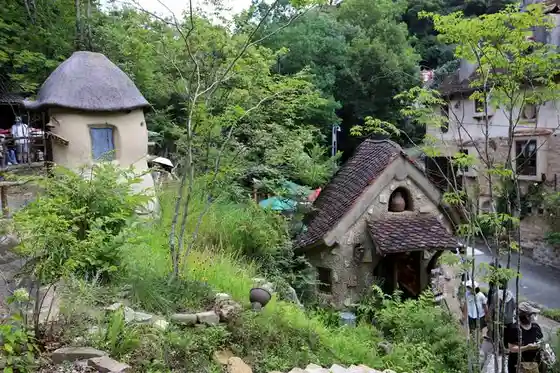
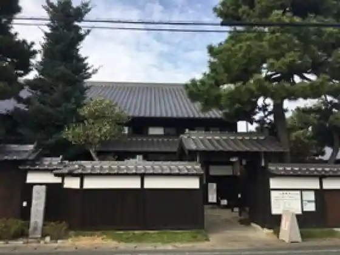
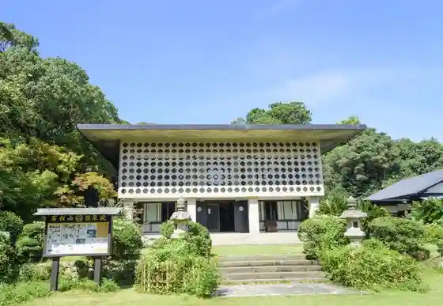
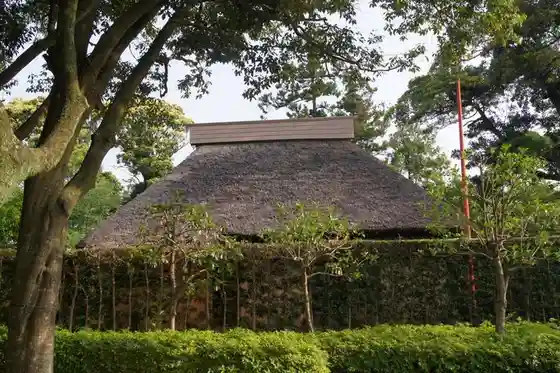

Nukumori Forest
Hamamatsu, Shizuoka · 053-486-1723 · Official / source link

Iinoya Castle Ruins
Hamamatsu, Shizuoka · 053-522-4720 · Official / source link
Akiyoshi Memorial Museum
Hamamatsu, Shizuoka · 053-421-0550 · Official / source link

Seirai In
Hamamatsu, Shizuoka · 053-452-7584 · Official / source link

Shijimi Tsuka Iseki
Hamamatsu, Shizuoka · 053-456-2208 · Official / source link

Hikima Castle Ruins (Hamamatsu Moto Shiro Town Toshogu)
Hamamatsu, Shizuoka · 053-452-1634 · Official / source link
Shizuokadaigaku Takayanagi Kinen Miraigijutsu Sozo Kan
Hamamatsu, Shizuoka · 053-478-1402 · Official / source link
Hamamatsu Hachiman Shrine
Hamamatsu, Shizuoka · 053-461-3429 · Official / source link
Tsubakihime Kannon
Hamamatsu, Shizuoka · 053-452-1634 · Official / source link
Hondasoichiro Mo no Zukuri Densho Kan
Hamamatsu, Shizuoka · 053-477-4664 · Official / source link
Tenryu Futamata Eki
Hamamatsu, Shizuoka · 053-952-2275 · Official / source link
Takane Joshi
Hamamatsu, Shizuoka · 053-982-0013 · Official / source link
Zuda Tera Castle Ruins Matsushita Yashikiato
Hamamatsu, Shizuoka · 053-452-1634 · Official / source link
Hosoe Shrine
Hamamatsu, Shizuoka · 053-522-1857 · Official / source link
Mikatahara Kosenjo Hi
Hamamatsu, Shizuoka · 053-452-1634 · Official / source link
Hamamatsu Art Museum
Hamamatsu, Shizuoka · 053-454-6801 · Official / source link
Hachi Mae Shrine
Hamamatsu, Shizuoka · 053-522-4720 · Official / source link
Ii Choku Oya no Haka
Hamamatsu, Shizuoka · 053-522-4720 · Official / source link
Inohana Mizumi
Hamamatsu, Shizuoka · Official / source link
Reki Shima
Hamamatsu, Shizuoka · Official / source link
Naka Village Ie House
Hamamatsu, Shizuoka · 053-596-5585 · Official / source link
Okusa Yama Shoryu Shidare Umezono
Hamamatsu, Shizuoka · 090-5108-3605 · Official / source link
Okusa Yama
Hamamatsu, Shizuoka · 053-452-1634 · Official / source link
Hamakita Shinrin Asurechikku
Hamamatsu, Shizuoka · 053-582-2211 · Official / source link
Benten Shima Seaside Park Beach
Hamamatsu, Shizuoka · 053-592-0757 · Official / source link
Tokugawa Hidetada Ko Tanjo no Ido
Hamamatsu, Shizuoka · 053-452-1634 · Official / source link
Saigagake Kosenjo
Hamamatsu, Shizuoka · 053-472-8383 · Official / source link
Iinoya Miya
Hamamatsu, Shizuoka · 053-542-0355 · Official / source link
Kiga Sekisho
Hamamatsu, Shizuoka · 053-523-2855 · Official / source link
Hamamatsu Hime Kaido to Dotaku no Folk History Museum
Hamamatsu, Shizuoka · 053-523-1456 · Official / source link
Kiyotaki Tera
Hamamatsu, Shizuoka · 053-925-3748 · Official / source link
Shibukawa Tsutsuji Park
Hamamatsu, Shizuoka · 053-522-4720 · Official / source link
Hamamatsu Akino Fuku Art Museum
Hamamatsu, Shizuoka · 053-922-0315 · Official / source link
Hamamatsu Furawa Park
Hamamatsu, Shizuoka · 053-487-0511 · Official / source link
Hamamatsu Museum
Hamamatsu, Shizuoka · 053-456-2208 · Official / source link
Hamamatsu Science Museum
Hamamatsu, Shizuoka · 053-454-0178 · Official / source link
Koeki Zaidanhojin Heiya Art Museum
Hamamatsu, Shizuoka · 053-474-0811 · Official / source link
Hamanako Orugoru Museum
Hamamatsu, Shizuoka · 053-487-2121 · Official / source link
Inohana Mizumi Shrine
Hamamatsu, Shizuoka · Official / source link
Daifuku Tera
Hamamatsu, Shizuoka · 053-525-0278 · Official / source link
Maka Ya Tera
Hamamatsu, Shizuoka · 053-525-0027 · Official / source link
Sakuma Dam
Hamamatsu, Shizuoka · 053-965-1350 · Official / source link
Futamata Joshi
Hamamatsu, Shizuoka · 053-925-5845 · Official / source link
Hamanako Taiken Gakushu Shisetsu Uotto
Hamamatsu, Shizuoka · 053-592-2880 · Official / source link
EXPASA Hamanako (Shuyaku)
Hamamatsu, Shizuoka · 0535-26-7611 · Official / source link
Hamanako Yuransen
Hamamatsu, Shizuoka · 053-487-0228 · Official / source link
Shirokura Kyo
Hamamatsu, Shizuoka · 053-966-2111 · Official / source link
Hamanako Kanzanji Onsen Hana Saki Baths
Hamamatsu, Shizuoka · 053-487-0001 · Official / source link
Ryugaiwa Hora
Hamamatsu, Shizuoka · 053-543-0108 · Official / source link
Hamamatsu Zoo
Hamamatsu, Shizuoka · 053-487-1122 · Official / source link
Hamanako Mariina Fantomumarinkodama
Hamamatsu, Shizuoka · 053-487-2892 · Official / source link
Yamahai no Beshonrodo
Hamamatsu, Shizuoka · 053-460-2010 · Official / source link
Ryuun Tera
Hamamatsu, Shizuoka · 0534-47-1231 · Official / source link
Chashitsu Shoin Tei
Hamamatsu, Shizuoka · 0534-734-310 · Official / source link
Shizuoka Prefectural Forest Park Mori no Ie
Hamamatsu, Shizuoka · 053-583-0090 · Official / source link
Roadside Station Kunma Suisha Village
Hamamatsu, Shizuoka · 053-929-0636 · Official / source link
Roadside Station Tenryu Aizu Hanamomo Village
Hamamatsu, Shizuoka · 053-923-2339 · Official / source link
Roadside Station Ippuku Tokoro Yokokawa
Hamamatsu, Shizuoka · 053-989-0026 · Official / source link
Hamamatsu Nagisa Sono
Hamamatsu, Shizuoka · 053-592-1525 · Official / source link
Hamamatsu Festival Hall
Hamamatsu, Shizuoka · 053-441-6211 · Official / source link
SWEETS BANK
Hamamatsu, Shizuoka · 053-441-3340 · Official / source link
Hamamatsu Furutsu Park Toki Yuki Sei
Hamamatsu, Shizuoka · 053-428-5211 · Official / source link
Hamanako Paruparu
Hamamatsu, Shizuoka · 053-487-2121 · Official / source link
Hamanako Garden Park
Hamamatsu, Shizuoka · 053-488-1500 · Official / source link
Hamamatsu Gakki Museum
Hamamatsu, Shizuoka · 053-451-1128 · Official / source link
Hamamatsu Shiro Park
Hamamatsu, Shizuoka · 053-457-0088 · Official / source link
Hamamatsu Shiro
Hamamatsu, Shizuoka · 053-453-3872 · Official / source link
Nakada Shima Sakyu
Hamamatsu, Shizuoka · 053-458-0011 · Official / source link
Benten Shima Seaside Park
Hamamatsu, Shizuoka · 053-592-0757 · Official / source link
Akiba Yamamoto Miya Akiba Shrine Kamiyashiro
Hamamatsu, Shizuoka · 053-985-0111 · Official / source link
Tenryu Hamanako Tetsudo Sharyokichi (Tenshadai)
Hamamatsu, Shizuoka · 053-925-2276 · Official / source link
Kanzanji Ropuei
Hamamatsu, Shizuoka · 053-487-2121 · Official / source link
Hoko Tera
Hamamatsu, Shizuoka · 053-543-0003 · Official / source link